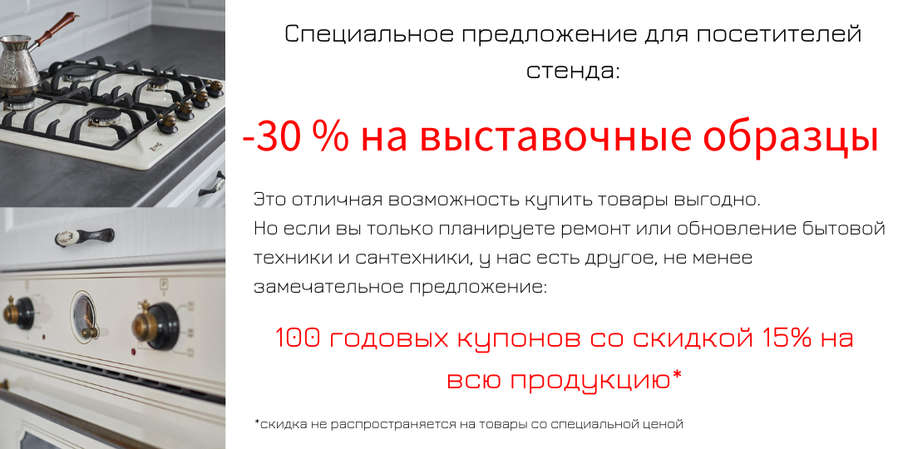

Новости ZorG
30.03.2024
Открытие 2-го фирменного салона ZorG
Внимание! Теперь мы еще ближе, 30 марта начал свою работу еще один фирменный салон бытовой техники для кухни и сантехники ZorG, удобно расположенный в самом центре Минска, в МФЦ "Ленинград", по адресу: ул. Ленина, 27, пав. 34
01.12.2023
Бренд ZorG перерегистрирован в городе Эссен (Essen), Германия
Бренд Zorg получил регистрацию в Германии, что позволит внедрить в поизводство нашей продукции инженерные экспертизы европейских лидеров в области контроля качества и радовать наших покупателей надежной, стильной и доступной техникой!
23.10.2023
Обнови кухню выгодно
Теперь купить мойку и смеситель можно еще выгоднее! Выбирай модель
мойки и забирай смеситель со скидкой. Закажи любую из моек:
ZORG ZRN 4944 Nano PVD Golg
ZORG ZRN 5045 Nano PVD
Gunblack
ZORG ZRN 5055 Nano PVD Gunblack
ZORG ZRN 5055
Nano PVD Gold
ZORG ZRN 5055 Nano PVD Gold Rosy
И получи возможность купить смеситель со скидкой от 30 до 50% от акционной стоимости!!!
07.04.2023
31-я международная выставка оборудования, пищевых технологий и
решений для ритейла и индустрии питания
Выставка HoReCa. RetailTech проводится 11-13 апреля 2023 года и является одной из крупнейших на территории Беларуси. Выставка посвещена оборудованию, пищевым технологиям и решениям для ритейла и индустрии питания. На выставке создается максимально эффективное коммуникационное пространство для работы и посетителей. Это уникальное место встречи лидеров отрасли и профессиональной аудитории посетителей. Активное участие в выставке позволяет получить уникальную информацию о состоянии и развитии рынка, провести переговоры, найти новые контакты, обменяться опытом.
Место проведения: Футбольный манеж, пр. Победителей, 20/2, г.
Минск, Беларусь Режим работы: 11 - 13 апреля с 10.00 до 18.00
Найти
наш стенд можно по схеме:

И у нас есть отличный повод для посещения выставки!

25.07.2022
Кухонная вытяжка Zorg Technology входит в ТОП лучших брендов
вытяжек для кухни по итогам премии «Номер один»
Кухонная вытяжка Zorg Technology входит в ТОП лучших брендов
вытяжек для кухни по итогам премии «Номер один»
Кухонная
вытяжка Zorg Technology вошла в ТОП-5 лучших брендов кухонных
вытяжек Беларуси по результатам интернет-голосования премии "Номер
один".
Конкурс проводился в период с 25.03 по 05.04.2022 г. В голосовании
приняли участие более 36 тысяч человек. Вытяжка получила высокие
баллы по отзывам на площадках и рекомендации к покупке.
Преимущества кухонных вытяжек ZORG
Широкий модельный ряд. Можно подобрать по желаемым
характеристикам: мощность, форма, цвет.
Вытяжка для кухни
Zorg имеет мощный мотор, но в то же время низкий уровень шума.
Высокая производительность. Большинство моделей могут
обрабатывать 450-600 м3 воздуха.
Вытяжки Zorg не занимают
много места, остается удобный доступ к плите.
Сенсорное или
кнопочное управление. Стоимость сенсорных вытяжек несколько выше
кнопочных, но они имеют более современный функционал.
Компактный размер. Вытяжки Zorg прекрасно подойдут для небольшой
кухни.
Официальная гарантия на всю бытовую технику от производителя.
19.07.2022
Мойка для кухни ZorG входит в ТОП лучших брендов кухонных моек по
итогам премии «Номер один»
Кухонная мойка Zorg вошла в список лучших брендов в номинации «ТОП
кухонных моек» по итогам интернет-голосования премии «Номер один»
в Республике Беларусь.
За нее проголосовали более 36 тысяч пользователей,
зарегистрированных на платформе голосования mytop.by. Конкурс
проводился с 25.03 по 05.04.2022 г. Голосование проходило
бесплатно для всех участников.
Преимущества моек бренда Zorg Кухонная мойка Zorg может быть
выполнена из различных материалов: искусственный камень,
нержавеющая сталь, закаленное ударопрочное стекло.
Варианты
кухонных моек Zorg представлены в различных цветах, подходят под
любую кухню. Имеют длительный срок службы. Устойчивы к
повреждениям. Поверхность из нержавейки является антибактериальной
и водоотталкивающей - следы капель воды не остаются после
высыхания .
Эргономичные мойки для кухни Зорг прекрасно
подходят как для маленьких, так и для больших кухонь.